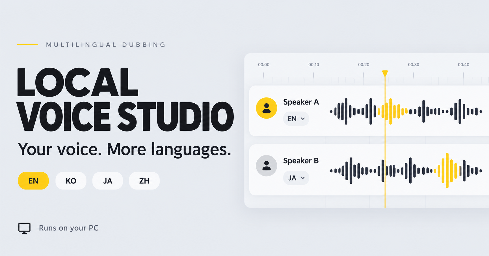

01 / SOURCE
원본 가져오기
화면 왼쪽 위에서 YouTube 링크나 영상·음성 파일을 선택하고 자막을 추출하세요. 이미 대본이 있다면 아래 직접 입력 칸에서 시작할 수 있습니다.
대사를 번역하고, 인물마다 목소리를 연결하고,
한 줄씩 다듬어 내 PC에서 더빙하세요.
사용자 매뉴얼 v1.4.0 · 웹 편집 화면에서 로컬 엔진을 연결해 사용합니다. Windows 초기 설치와 공개 HTTPS 배포 연결은 베타 검증 대상입니다.

상단의 원본·목소리 설정부터 아래 대본·번역·생성·결과까지 차례로 따라가세요.
화면 왼쪽 위에서 YouTube 링크나 영상·음성 파일을 선택하고 자막을 추출하세요. 이미 대본이 있다면 아래 직접 입력 칸에서 시작할 수 있습니다.
원본 가져오기 옆에서 인물을 추가하고 각 인물의 참조 음성을 연결하세요. 한 목소리만 쓴다면 단일 샘플을 사용합니다. 인물별 샘플이 없으면 기본 목소리로 생성됩니다.
아래 자막 표에서 각 구간의 화자를 선택하거나 여러 구간에 일괄 배정하세요. 문장·시작·종료 시간을 수정하고 Enter로 분리, 행 시작 Backspace로 같은 화자 구간을 합칠 수 있습니다.
자막 표 아래에서 대상 언어와 번역 방식을 선택하고 대본 번역을 실행하세요. 원문 비교를 펼쳐 의미·호칭·화자를 확인하고 번역문을 직접 다듬으세요.
번역 아래에서 생성 전 번역 여부와 원본 시작 시각 참고 설정을 확인하고 음성을 생성하세요. 분리한 구간 시간은 추정값이므로 검토가 필요합니다. 긴 발화는 후속 구간을 늦출 수 있습니다.
화면 맨 아래에서 진행 상황과 오류를 확인하세요. 전체 더빙과 이름이 표시된 인물별 음성을 들어보고, 자막·ZIP·검수 자료를 다운로드해 영상 동기화를 확인하세요.
편집 화면의 스튜디오 시작을 누르세요. 브라우저의 ‘앱 열기’를 허용하고, 로컬 창에 표시된 사이트 주소를 확인해 승인하면 연결됩니다. 연결 코드와 트레이 아이콘은 사용하지 않습니다.
연결되지 않아도 미설치라는 뜻은 아닙니다. 실행 승인 창, 브라우저의 로컬 네트워크 접근 권한, 이전 버전 엔진 실행 여부를 먼저 확인하세요.
스튜디오 시작은 기존 연결을 먼저 검사합니다. 유효한 연결은 바로 사용하고, 연결되지 않을 때만 실행 요청 후 다시 확인합니다. 그 뒤에도 실패한 경우에만 처음 설치 또는 연결 문제 해결을 안내합니다. 연결 실패만으로 설치되지 않았다고 판단하지 않습니다.
하나의 설치 프로그램에서 처음 설치와 기존 연결 복구를 모두 처리합니다. 압축을 풀거나 파일·명령어를 찾아 실행할 필요가 없습니다.
웹에서 최신 설치 프로그램을 다시 다운로드하고, 받은 EXE를 열어 설치 시작을 선택하세요. 이미 설치된 호환 항목은 다시 검사해 재사용합니다. 설치 도중 실패한 경우를 연결 복구와 혼동하지 마세요. 로컬 준비 확인 완료가 나온 뒤 웹에서 스튜디오 시작을 누르세요.
스튜디오 시작 → 브라우저의 앱 열기 확인 → 로컬 창의 사이트 승인 → 엔진 연결됨 순서입니다. 연결되지 않으면 기다리기만 하지 말고 취소·재시도 또는 설치·복구 프로그램을 사용하세요. 브라우저의 로컬 네트워크 권한도 확인하세요.
설치 프로그램의 로컬 검사 통과와 실제 브라우저 연결은 구분해서 표시합니다. 마지막 탭이 닫히면 진행 중인 작업 완료 후 자동 종료합니다. 별도 트레이나 연결 코드 입력은 필요하지 않습니다.
Windows x64 베타입니다. 설치 프로그램은 아직 코드 서명되지 않았으며 새 PC에서의 전체 설치와 공개 웹 연결은 추가 검증 대상입니다.
아니요. 다운로드한 설치 프로그램을 실행하고 변경 내용을 확인해야 합니다. 현재 페이지는 매뉴얼·다운로드 안내이며, 웹 편집 화면은 로컬 엔진과 연결해 사용합니다. 실제 음성 처리는 사용자 PC에서 실행하도록 구성합니다.
기존 Python·패키지·FFmpeg·Ollama·모델을 검사해 호환 항목은 재사용합니다. 기존 환경은 덮어쓰지 않으며 부족한 패키지는 별도 환경에 준비합니다. 기존 서버는 종료하지 않습니다. 엔진 포트는8766, 자체 Ollama는11435이며 실행 중인 기존 Ollama는 그 주소로 연결합니다.
현재는 수동으로 화자를 등록하고 구간에 배정합니다. 서로 다른 목소리가 필요하면 인물별 참조 음성을 지정하세요. 샘플이 없으면 기본 목소리입니다.
발화의 속도와 길이를 보존하므로 긴 대사가 다음 구간을 지연시킬 수 있습니다. 번역·발음·추가 발화·동기화는 최종 검수가 필요합니다.
기본 Ollama 번역과 음성 생성은 로컬입니다. 모델 다운로드와 YouTube 가져오기는 인터넷을 사용합니다. 외부 번역 API를 선택하면 대본이 지정한 제공자에게 전송됩니다. 권한이 있는 자료와 목소리만 사용하세요.